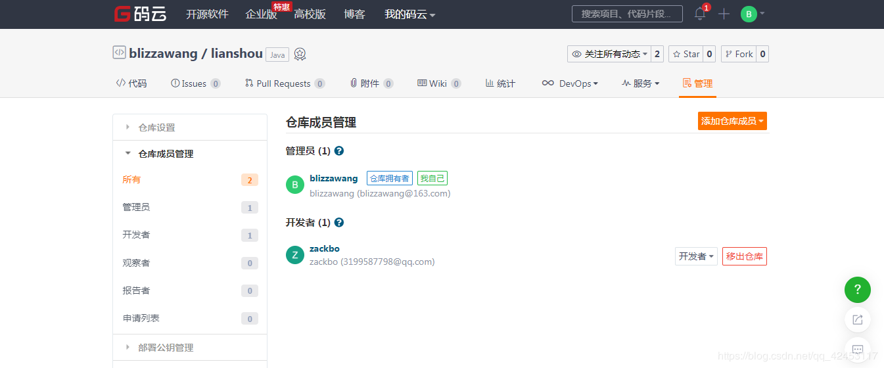
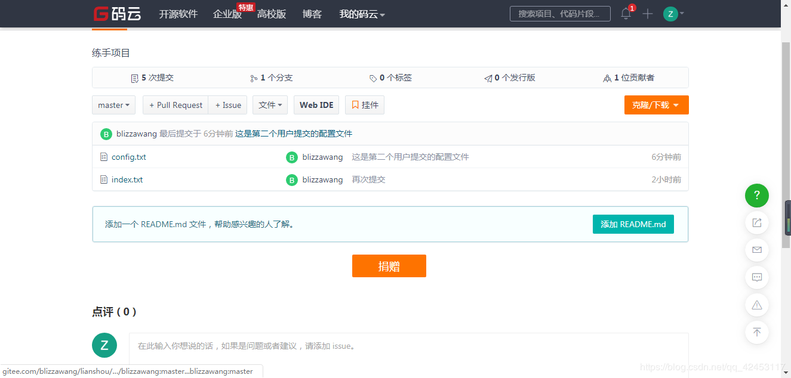

如果你想让一位叫"伙夫"的程序员，和你一起开发，首先你得在你的代码仓库把伙夫添加到此项目中来，让其成为开发者。
具体步骤：
项目->管理->项目成员管理->开发者->添加项目成员->输入"huofu"
在GitHub中的具体步骤：
项目->Settings->Collaborators->输入"huofu"
为了给大家演示，我创建了一个小号，并将其添加进我的项目成为开发者。

接下来我们将路径切换到F盘，模拟一个新的用户。
我们输入
git clone https://gitee.com/blizzawang/lianshou.git这条指令的作用是将对应仓库地址的项目克隆到本地。执行完后，F盘下就多了一个rrd的文件夹，这就是第一个用户推送上去的项目。我们姑且叫它管理员，那第二个用户就叫开发者了。
然后我们在克隆下来的目录中去创建一个文件，然后随意地输入一些内容。
我们对修改后的项目进行提交。
git add .
git commit -m "这是第二个用户提交的文件"
git push https://gitee.com/blizzawang/lianshou.git master这样，我们的第二个用户就将项目推送到了线上仓库。
如果没有弹出输入用户名和密码的提示框，说明git使用的还是你第一个用户的信息，你需要将用户进行切换，然后再执行上面的操作。

这样线上仓库中就有了刚才推送的文件，有人可能就会问了，这个config.txt文件不是huofu提交的吗，怎么还是显示管理员提交的呢？确实是两个用户提交的，但因为你是在同一台电脑进行提交，服务器还是会认为你的两次提交是同一个人。
这时候我们回到第一个用户的工作目录，你会发现目录中只有一个文件，也就说明线上仓库的版本是比第一个用户的版本高的，这时候我们就需要对本地的仓库进行更新，输入
git pull origin master这时候再查看工作目录，发现和线上仓库的内容一致了。